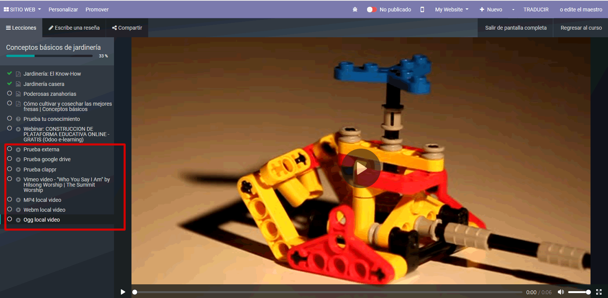

Now you can embed local uploaded videos, external videos from external storage, Google Drive videos, livestreaming broadcast and Vimeo videos.
Odoo eLearning by default only allow embed Youtube videos, but now you can take control of videos can you insert in every slide.
Now you can too embed a Zoom meeting in content slide. Copy and paste the zoom meeting ID (you must share only the password of meet with your attendees). Show the restrictions for Zoom Web Client for Safari browser.
Visit us in GAMA Recursos Tecnolgicos Peru - https://www.recursostecnologicos.pe